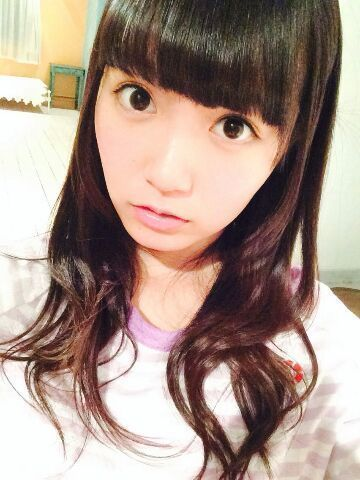

| 2014/05 16 Fri | ひめたん-OoO-その444 |
ぞろめ！
前回の日記には
あたたかいコメントたくさん
ありがとうございました（ ; ; ）
どうしようもない私だけど
そんな私をみなさんは
好きだって言ってくれる。
私は、私が
そりゃもう嫌いで嫌いで
しょうがないけど
みなさんの好きな人を
こてんぱんに悪く言うのは
なんか気が引けるというか
うーん矛盾......
ニホンゴムズカシイ............
とりあえず、
もっと自信持ってよってたくさん言われたので
自分を好きになるための努力は
してみようかなと思ったり思わなかったり
私の努力次第ということならば
精一杯頑張らせていただこうじゃないか！
てな感じです(＾ω＾)
これからもよろしくね

さて、この土日は名古屋( ´ ▽ ` )ノ
土曜は全握にアンダーライブ
日曜は個握があります！
土曜日の握手会は
いこまちゃん(生駒里奈ちゃん)とペアで
11レーンです
いこまふぁむのみなさん
1日よろしくお願いします
どうかひめたんとも仲良くしてくださいな＊＊
そしてひめきゅんさーん
名古屋は久々だね！
みんなに会えるの楽しみにしてるよー♪
日曜日の個握は
4、5部に参加させていただきます
名古屋での2部制は確か初だよね？
今までよりも
たくさん握手できるんだー(((o(*゜▽゜*)o)))
こちらも楽しみにしてますっ
あー今夜は徹夜じゃああ(´；ω；｀)
課題して、お泊まりの準備して
朝はきっとはやいんだろうな
学生さんはそろそろテストの時期だったりするよね
ひめたんも今夜は頑張るから
みなさんもふぁいとーだよー
プリンシパルのプロフィール
更新されました！

 ひめたんは犬語分かりますか？
ひめたんは犬語分かりますか？
ワンワンワワンワン！？
さーっぱーりわーかりませーん！し
知りたいとも思いませーん！
乃木ここでバースデーケーキのロウソクを
息で吹き消していましたが、
なぜひめたんビームで消さなかったのでしょうか？
ひめたんびーむなんてやってるうちに
ロウソクが炎上するでしょうが！！！
毎日毎日ひめたんのこと
可愛い大好きって言ってる
こんな重い女は嫌ですか？
捨てないでぇ。・゜(゜⊃ω⊂゜)゜・。
ひめたんはかまちょかまちょな人なので
むしろ嬉しいよ///
ありがとうーもっと言ってー♪♪
充電したいけど...
46%だったらどうする？
充電します＼( ^O^ )／即
ひめたんは充電70ぱー切ったら落ち着かないの
わーい46だーとかないの
ねーねー ひめたんの握手会行きたいんだけど
何喋っていいかわからないから、
とりあえず告白していい？？
だ、だだだだ、だだ
だめって言ったらどーすんの？///
ちーちゃん美人ですね〜色っぽいですね〜
ひめたんと同い年には・・・見えます(震え声)
無理しないでください、
わかってます大丈夫です。
小さな声で言いますが
私の方が10ヶ月お姉さんです。
クイニーアマンには目が無いと評判の
中元日芽香さんに質問です。
クイニーアマンの魅力って何ですか？
(1回しか食べたことないとか言えない)
ひめたんのモノマネするね
へへへへへへへへへへ
どう？
似てるでしょ
雑！雑すぎませんか！
もっとなんかあるでしょ！
最近よくある、
とりあ握手会でびーむやっときゃいいみたいなのも
あれはあれでどうかと思いますけど
それにしても、もうちょっと、
もうちょっと何かなかったですかね
ひめたんの日記の
コメント欄下２ケタに46を踏んだ方へ
手書きでコメ返するコーナー
＼ ひめたん46 ／

いつもたくさんのコメント
本当にありがとうございます
みなさんのコメントを受けての感想は
記事の上の方に書きましたよー
プリンシパルのお稽古もがんばってるよ♪
明日は朝はやいーわにゃにゃ
(＊´・ω・＊)
コメント(546)
2014/05/16 00:06